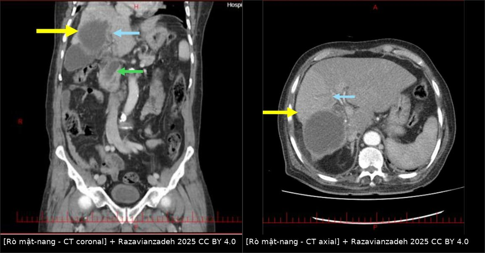
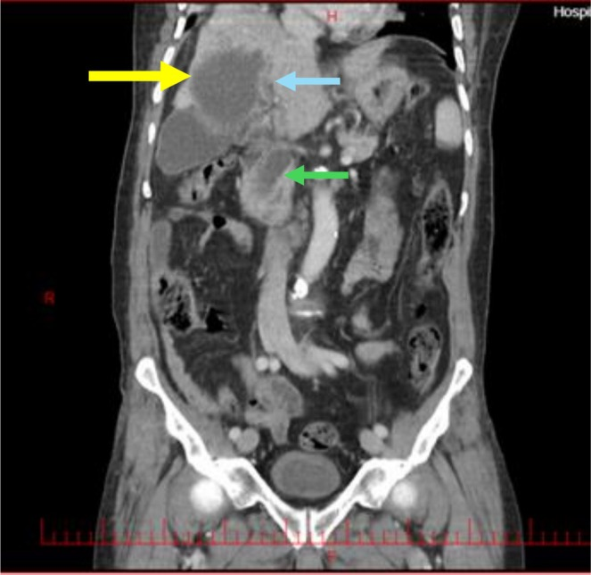
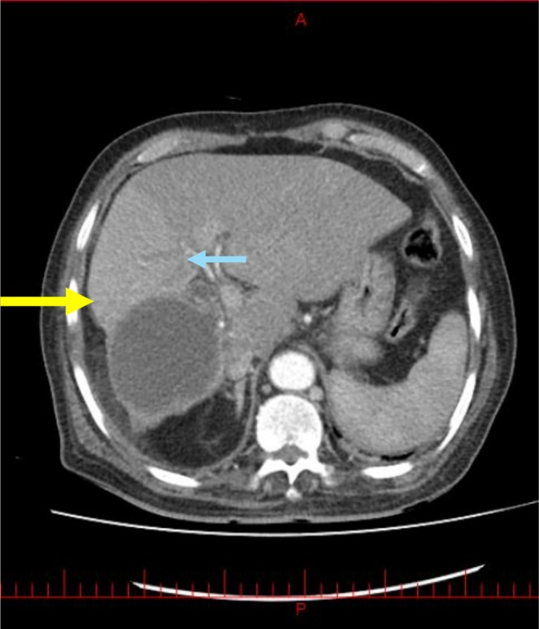
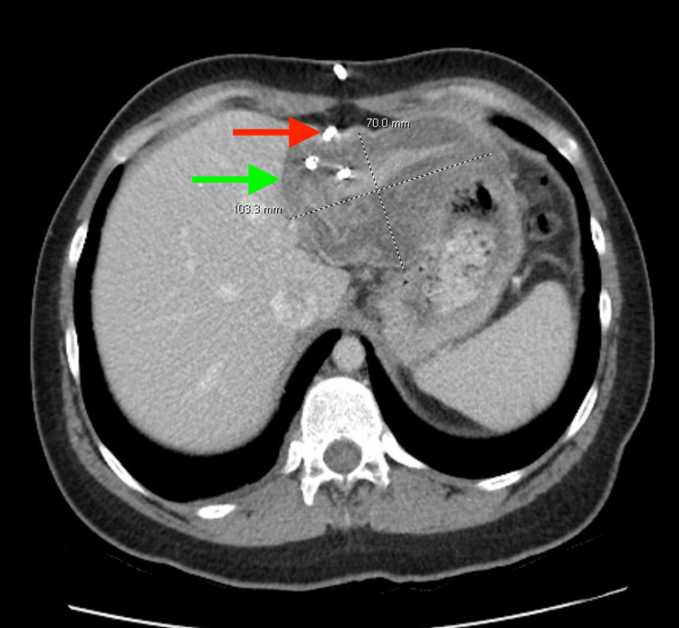

1809 — Rò mật–nang dai dẳng sau PAIR: ngưỡng lưu lượng, S-CAT/PEVAC, ERCP cắt cơ thắt + stent & khi nào mổ
Tags: pattern:ro-mat pattern:thong-mat-nang vung:gan vung:duong-mat protocol:PAIR protocol:ERCP protocol:MRCP score:ISGLS incidentaloma:ro-sau-can-thiep
Mức chắc chắn (certainty): tổng hợp y văn (literature synthesis) — 2 nghiên cứu đoàn hệ lớn (88 ca ERCP; 106 ca phẫu thuật), 1 tổng quan kỹ thuật can thiệp 2026 và 3 ca bệnh có ảnh gốc; mọi con số truy được về sources.md, chỗ chưa có dữ liệu ghi rõ "chưa rõ".
1. Tổng quan bệnh học – cơ chế hình ảnh
- Định nghĩa: rò mật–nang (cystobiliary fistula/communication — CBC) là thông giữa lòng nang sán và một nhánh đường mật trong gan. Sau PAIR (chọc hút – bơm chất diệt – hút lại) hoặc sau mổ, nang xẹp xuống nhưng lỗ thông vẫn còn → dịch mật chảy ngược vào khoang nang rồi ra ống dẫn lưu (hoặc tụ lại thành biloma). Rò dai dẳng = còn chảy sau khi khoang nang đã dẫn lưu tốt, thường quá 10–14 ngày.
- Vì sao có lỗ thông: thành nang sán là mô xơ mỏng dính và ăn mòn ống mật nhỏ; khi áp lực trong nang cao (nang lớn) hoặc khi đầu kim/chất diệt làm hoại tử thành nang, lỗ thông mở ra. Nang lớn ≥ 8,85 cm và bilirubin trực tiếp ≥ 0,7 mg/dL là 2 yếu tố dự báo độc lập của CBC (OR 1,29 và 16,35; n = 106 —
PMC13342622). - Tần suất: CBC gặp 42% ở người mổ nang sán gan (16% rò rõ — frank, 26% rò ẩn — occult, chỉ phát hiện khi thử nghiệm trong mổ); trong 26% rò ẩn có tới 25% tiến triển thành rò mật lưu lượng cao sau mổ, một số phải ERCP (
PMC13342622). Ở trẻ, rò mật–nang gặp 2–42%; nang có rò trung vị 100 mm so với 80 mm không rò, nằm viện 32 ngày vs 7 ngày (PMC12084229). - Sau can thiệp, rò mật được báo cáo 50–63% ở người mổ/PAIR nang sán gan — nhưng phần lớn tự đóng khi áp lực đường mật giảm; chỉ nhóm lưu lượng cao/kéo dài mới cần can thiệp (
PMC12679019). - TẠI SAO hình ảnh trông như vậy (vật lý + mô bệnh):
- CT: mật có đậm độ 0–20 HU, gần nước; vì vậy không phân biệt được mật với dịch nang trên CT thường. Dấu hiệu chốt là đường hầm giảm đậm độ nối khoang nang với nhánh mật, hoặc thuốc cản quang trong nang xuất hiện ở đường mật thì muộn (nếu đã bơm cản quang vào nang). Trong ca minh họa, CT ban đầu đã có dấu hiệu nhưng bị bỏ sót, chỉ lộ ra khi soi lại sau ERCP (
PMC12669071). - MRCP: mật và dịch nang đều T2 rất sáng → hình “hai túi sáng nối nhau”; giá trị nằm ở hình thái liên tục của ống mật, không phải tín hiệu. Rò thấp lưu lượng có thể không thấy trên MRCP vì lòng rò xẹp.
- Chụp qua ống dẫn lưu (fistulography/sinogram): bơm thuốc tan trong nước vào khoang nang; nếu thuốc hiện lên đường mật = còn thông. Đây là phép đo trực tiếp “có rò hay không”, rẻ hơn MRCP.
- Lưu lượng dịch: theo Poiseuille, lưu lượng ∝ bán kính lỗ rò⁴ × chênh áp; vì vậy rò ≥ 400 mL/ngày gần như chắc chắn là thông với đường mật lớn/trung tâm, còn rò < 10 mL/ngày chỉ là lỗ nhỏ ở ngoại vi. Đây là cơ sở của mọi ngưỡng trong bài.
- Vì sao ERCP làm rò đóng: cắt cơ thắt Oddi ± đặt stent làm giảm chênh áp đường mật–tá tràng, dòng mật đi theo đường có trở lực thấp xuống ruột thay vì qua lỗ rò → lỗ rò tự xẹp. Vì vậy ERCP là điều trị cơ học, không phải “bịt lỗ”.
- CT: mật có đậm độ 0–20 HU, gần nước; vì vậy không phân biệt được mật với dịch nang trên CT thường. Dấu hiệu chốt là đường hầm giảm đậm độ nối khoang nang với nhánh mật, hoặc thuốc cản quang trong nang xuất hiện ở đường mật thì muộn (nếu đã bơm cản quang vào nang). Trong ca minh họa, CT ban đầu đã có dấu hiệu nhưng bị bỏ sót, chỉ lộ ra khi soi lại sau ERCP (
2. Mẫu hình + chẩn đoán phân biệt theo vị trí (gamut)
- Theo vị trí nang:
- Nang trung tâm/rốn gan (segments IV, V, VIII gần đường mật chính) → rò lưu lượng cao, dễ vàng da – cholangitis, thường cần ERCP sớm.
- Nang ngoại vi → rò lưu lượng thấp, khoang nang tự xẹp; theo dõi 10–14 ngày là đủ nếu không nhiễm trùng.
- Nang đã vỡ vào đường mật (intrabiliary rupture) → mảnh màng/mảnh nang trong ống mật chủ, tắc mật + cholangitis; đây là thể khác với rò qua khoang nang.
- Theo thời điểm:
- Sớm (< 10 ngày): rò sau PAIR/mổ, còn dịch mật qua ống dẫn lưu — đa số tự đóng.
- Dai dẳng (> 10–14 ngày, hoặc > 400 mL/ngày): cần ERCP ± S-CAT; nếu thất bại → mổ.
- Muộn (> 1 tháng): nghĩ hẹp đường mật do xơ hóa (nhất là nếu đã bơm chất diệt vào đường mật — xem bài 106), hoặc khoang nang nhiễm trùng/biloma.
- Gamut “dịch trong khoang nang sau PAIR”: mật (rò) · dịch nang còn lại · biloma · áp-xe khoang nang · máu tụ · dịch tiêu hóa (rò ruột — hiếm).
- Gamut “vàng da + sốt sau can thiệp nang sán”: rò mật–nang có cholangitis · mảnh nang làm tắc ống mật · sỏi mật thông thường (ca minh họa có sỏi 10 mm ống mật chủ kèm rò) · hẹp đường mật do xơ hóa · áp-xe gan.
3. Bảng so sánh phân biệt (ma trận đối chiếu)
| Thực thể (entity) | Hình ảnh điển hình | Chốt vào (rule-in) | Chốt loại (rule-out) | Gợi ý xác nhận |
|---|---|---|---|---|
| Rò mật–nang lưu lượng thấp | Khoang nang xẹp dần; ống dẫn lưu ra dịch vàng nhạt < 400 mL/ngày; CT/MRCP có thể không thấy đường hầm | Dịch dẫn lưu có bilirubin cao + lưu lượng < 400 mL/ngày + không sốt | Ra mủ, khí trong khoang, sốt cao → áp-xe, không phải rò đơn thuần | Đo bilirubin dịch dẫn lưu; theo dõi 10–14 ngày |
| Rò mật–nang lưu lượng cao | ≥ 400 mL/ngày, dịch xanh–vàng đậm; nang trung tâm; có thể vàng da | Lưu lượng ≥ 400 mL/ngày + nang gần đường mật chính + hình ảnh đường hầm | Lưu lượng thấp, tự giảm sau 3–5 ngày → không cần can thiệp | ERCP: thấy thuốc thoát từ nhánh mật vào khoang nang |
| Rò ẩn (occult CBC) | Nang lớn, thành dày; không thấy đường hầm trên CT; thử nghiệm trong mổ âm tính giả | Nang ≥ 8,85 cm + bilirubin trực tiếp ≥ 0,7 mg/dL (OR 1,29 và 16,35) | Nang nhỏ, bilirubin bình thường → nguy cơ thấp | Theo dõi sát hậu phẫu; 25% rò ẩn thành rò lưu lượng cao |
| Vỡ nang vào đường mật (intrabiliary rupture) | Mảnh màng/nang trong ống mật chủ; ống mật chủ giãn (ca: 25 mm, sỏi 10 mm, nang 70 × 63 mm) | Vàng da + cholangitis + mảnh màng trong lòng ống mật | Không có mảnh trong lòng, chỉ dịch quanh nang → rò qua khoang | ERCP gắp mảnh + cắt cơ thắt; CT lại sau ERCP |
| Rò mật sau cắt gan (ISGLS) | Dịch ổ bụng/dẫn lưu, có thể biloma; không có nang sán | Bilirubin dịch ≥ 3× huyết thanh từ ngày 3 sau mổ | Sau PAIR, không mổ cắt gan → không áp dụng ISGLS | CE-MRCP, ERCP (bài 1814) |
| Biloma không thông | Tụ dịch khu trú, bờ rõ, không thấy thuốc vào đường mật khi bơm qua ống dẫn lưu | Bơm cản quang qua dẫn lưu: thuốc KHÔNG vào đường mật | Có thuốc vào đường mật → rò thật | Sinogram qua ống dẫn lưu; MRCP |
| Áp-xe khoang nang | Thành dày, khí trong khoang, dịch đục; sốt, CRP cao | Sốt + khí trong khoang + mủ qua dẫn lưu | Dịch trong, không khí, không sốt → không phải áp-xe | Cấy dịch; dẫn lưu; kháng sinh |
| Hẹp đường mật do xơ hóa (caustic) | Hẹp lan tỏa/chuỗi hạt sau bơm chất diệt; giãn đường mật trong gan | Tiền sử bơm scolicidal + hẹp khu trú/lan tỏa + không khối | Hẹp đơn độc tại lỗ rò, không lan → lành tính sau rò | MRCP; ERCP; xem bài 106 |

Trái: CT coronal — nang sán thùy phải (vàng) + đường hầm (xanh) vào nhánh mật trung tâm + ống mật chủ (xanh lá). Phải: CT axial cùng bệnh nhân, cùng ba mốc. Nguồn: Clin Case Rep 2025 (PMC12669071), Fig. 1–2 — CC BY 4.0; ảnh ghép letterbox, không crop.Đọc đúng “dịch vàng qua ống dẫn lưu”
- Xác nhận là mật, không phải dịch nang: đo bilirubin dịch dẫn lưu (hoặc dipstick bilirubin); dịch nang sán điển hình không có bilirubin. Dịch vàng sẫm + bilirubin cao = mật.
- Đo lưu lượng đúng cách: ghi mL/24 giờ trên cùng một ống, cùng tư thế; ống gập/tắc làm lưu lượng tụt giả tạo — kiểm tra bằng siêu âm khoang nang và bơm rửa thử.
- Đừng bơm chất diệt khi chưa loại rò: bơm ethanol/hypertonic saline vào đường mật gây viêm xơ đường mật (caustic sclerosing cholangitis) — biến chứng nặng, không hồi phục (bài 106).
4. Protocol chụp + hệ phân độ/điểm chuẩn hóa
- Chuỗi hình ảnh:
- Siêu âm bụng tại giường: kích thước khoang nang, vách, khí, dịch quanh gan.
- CT bụng có cản quang (3 thì) khi nghi nhiễm trùng/biến chứng: đo nang, thành, khí, dịch quanh gan, giãn đường mật. Không dùng CT để loại trừ rò — ca minh họa đã bỏ sót trên CT.
- MRCP (T2 lát mỏng 1–2 mm) khi nghi rò mà CT không rõ: tìm đường hầm nối khoang nang – nhánh mật, mảnh màng trong ống mật, hẹp đường mật. Rò lưu lượng thấp có thể âm tính — không loại trừ.
- Sinogram/fistulography qua ống dẫn lưu (thuốc tan trong nước): phép đo trực tiếp nhất “còn thông hay không”; làm trước khi quyết định rút ống.
- ERCP: vừa chẩn đoán (thấy thuốc thoát vào khoang nang, mảnh màng trong ống mật) vừa điều trị.
- Ngưỡng hành động (theo
PMC12679019,PMC13122038,PMC13342622):- ERCP được chỉ định khi dịch mật > 100 mL/ngày kéo dài > 10 ngày sau can thiệp; thực tế các đoàn hệ dùng ≥ 400 mL/ngày để gọi “lưu lượng cao”.
- ERCP cắt cơ thắt + stent nhựa là mô thức hiệu quả nhất: đóng rò 100%, trung vị 20 ngày (dao động 8–93); riêng nhóm ES + stent đóng trung vị 18 ngày. ES đơn thuần thất bại 6/15 ca (rò > 20 ngày, > 200 mL/ngày) và phải đặt stent lại (đóng sau 15,5 ngày) (
PMC12679019). - Yếu tố dự báo đóng trong 20 ngày: ES + stent (OR 5,27; 95% CI 1,30–21,37) và lưu lượng < 400 mL/ngày (OR 3,43; 1,37–8,55).
- S-CAT (standard catheterization technique) — đặt catheter pigtail 6F/8F vào khoang nang: nếu 24 giờ ra > 10 mL dịch mật → giữ catheter, KHÔNG bơm chất diệt; khi < 10 mL/24 giờ** mới bơm chất diệt, có thể nhiều lần trước khi rút. S-CAT chỉ định cho CE1/CE3a **> 10 cm, hoặc khi PAIR phát hiện rò mật–nang (
PMC13122038). - PEVAC (hút liên tục, không dùng chất diệt): dùng cho CE2/CE3b, kể cả có rò; nhược điểm thời gian lưu catheter trung bình 53,6 ngày, tăng nguy cơ rò và nhiễm trùng thứ phát (
PMC13122038). - Khi ERCP thất bại: rò > 10 mL/ngày kéo dài 10–14 ngày sau S-CAT/MoCAT → ERCP cắt cơ thắt/stent; nếu vẫn thất bại (hẹp, đứt ống mật, khoang nang nhiễm trùng dai dẳng) → mổ (dẫn lưu + khâu lỗ rò/khâu ống mật, hoặc cắt gan nếu tổn thương khu trú).
flowchart TD
A[Dịch mật qua ống dẫn lưu sau PAIR/mổ nang sán] --> B[Đo bilirubin dịch + lưu lượng 24 giờ + sinogram]
B --> C{Có rò thật?}
C -->|Không, bilirubin thấp| D[Dịch nang/biloma không thông: theo dõi, rút ống khi khô]
C -->|Có| E{Lưu lượng và thời gian}
E -->|Dưới 400 mL/ngày và dưới 10 ngày| F[Theo dõi 10-14 ngày, dinh dưỡng, kháng sinh khi nhiễm]
E -->|Từ 400 mL/ngày hoặc trên 10 ngày| G[ERCP: cắt cơ thắt + stent nhựa]
G --> H{Đóng trong 20 ngày?}
H -->|Có| I[Rút stent, theo dõi MRCP]
H -->|Không, trên 200 mL/ngày| J[S-CAT: catheter 6F-8F, chỉ bơm chất diệt khi dưới 10 mL/ngày]
J --> K{Đóng sau 10-14 ngày?}
K -->|Có| I
K -->|Không| L[Mổ: khâu lỗ rò/ống mật hoặc cắt gan khu trú]
5. Biến thể bình thường và cạm bẫy
- Khoang nang sau PAIR xẹp chậm là bình thường: khoang có thể còn dịch nhiều tháng, thành dày, vôi hóa dần; không gọi là thất bại nếu không có mật, không sốt, không lớn lên.
- Khí trong khoang sau PAIR: thường do thao tác/ống dẫn lưu — không đồng nghĩa áp-xe nếu không sốt, không mủ.
- Bẫy bỏ sót trên CT: ca minh họa cho thấy đường hầm đã có trên CT đầu nhưng bị đọc sót vì “thỏa mãn tìm kiếm” với sỏi ống mật chủ; khi có cholangitis + nang sán, phải chủ động tìm lỗ thông, không dừng ở sỏi.
- Bẫy “lưu lượng thấp giả”: ống dẫn lưu gập/tắc hoặc đầu ống nằm ngoài khoang → lưu lượng tụt; kiểm tra bằng siêu âm và bơm thử.
- Bẫy “rò không thấy trên MRCP”: rò lưu lượng thấp có thể không hiện; MRCP âm không loại trừ — dùng sinogram và theo dõi lâm sàng.
- Bẫy chết người: bơm chất diệt (ethanol, hypertonic saline) khi chưa loại trừ CBC → viêm xơ đường mật lan tỏa, vàng da tiến triển, phải đặt stent/ghép gan (bài 106). Luôn kiểm tra màu dịch + bilirubin dipstick + cản quang trước khi bơm.
- Phân biệt với rò sau cắt gan: ISGLS dựa trên bilirubin dịch ≥ 3× huyết thanh từ ngày 3, không áp dụng cho rò qua khoang nang sau PAIR (bài 1814).
6. Tự lượng giá — Blind Quiz
Ca 1 — Nữ, sốt + vàng da sau can thiệp nang sán gan. Nhìn CT coronal trước, mô tả ba mốc mũi tên.

- Gợi ý lâm sàng: Charcot triad + tụt huyết áp; ống mật chủ giãn 20 mm, sỏi 10 mm ở đoạn xa, nang 70 × 63 mm phân thùy VI.
- Câu hỏi: Mũi tên vàng/xanh/xanh lá là gì? Vì sao CT đầu bị đọc sót? Bước xử trí tiếp theo?
Bấm để hiện đáp án (findings + chẩn đoán)
- Dấu hiệu: nang sán thành dày, vôi hóa (vàng); đường hầm nối khoang nang với nhánh mật trung tâm (xanh); ống mật chủ giãn chứa sỏi (xanh lá).
- Chẩn đoán: rò mật–nang (CBC) + sỏi ống mật chủ + cholangitis; ERCP gắp sỏi 3 × 1 cm, lấy mảnh nang, cắt cơ thắt; bệnh nhân hồi phục.
- Vì sao sót: “thỏa mãn tìm kiếm” — thấy sỏi là dừng; đường hầm chỉ được nhận ra khi soi lại CT sau ERCP.
- Nguồn: Clin Case Rep 2025 (PMC12669071), Fig. 1 — CC BY 4.0.
Ca 2 — Dùng lại ảnh CT của ca 1 trong bối cảnh khác: sau PAIR 12 ngày, ống dẫn lưu ra 450 mL dịch vàng/ngày, không sốt. Nhìn CT axial và trả lời.

- Câu hỏi: Dịch vàng này là gì? Có phải rò lưu lượng cao? Hai lựa chọn điều trị và ngưỡng quyết định?
Bấm để hiện đáp án (findings + chẩn đoán)
- Dịch vàng 450 mL/ngày = mật (bilirubin cao); ≥ 400 mL/ngày → rò lưu lượng cao, thông với đường mật lớn.
- Điều trị: ERCP cắt cơ thắt + stent nhựa (đóng 100%, trung vị 20 ngày; ES+stent OR 5,27 so với ES đơn thuần). Nếu thất bại và còn > 10 mL/ngày sau 10–14 ngày → S-CAT (catheter 6F/8F; chỉ bơm chất diệt khi < 10 mL/ngày).
- Cạm bẫy: bơm chất diệt lúc còn rò → viêm xơ đường mật.
- Nguồn: Clin Case Rep 2025 (PMC12669071), Fig. 2 — CC BY 4.0; ngưỡng từ World J Gastrointest Surg 2025 (PMC12679019) và World J Radiol 2026 (PMC13122038).
Ca 3 — Sau PAIR, CT kiểm tra có ống pigtail trong khoang nang. Lưu lượng 8 mL mật/ngày. Làm gì tiếp?

- Gợi ý: nang ban đầu 11,8 × 8,8 × 5,2 cm, sau dẫn lưu còn 10 × 7 cm; bệnh nhân không sốt.
- Câu hỏi: Lưu lượng này nói gì? Có được bơm chất diệt chưa? Khi nào rút ống?
Bấm để hiện đáp án (findings + chẩn đoán)
- Dấu hiệu: catheter pigtail trong khoang nang đã xẹp một phần; 8 mL mật/ngày < 10 mL/ngày.
- Ý nghĩa: lỗ rò nhỏ/đang đóng; theo S-CAT, < 10 mL/24 giờ mới được bơm chất diệt (nhiều lần nếu cần), sau đó rút catheter khi khoang xẹp và không còn mật.
- Theo dõi: siêu âm/CT xác nhận khoang xẹp; không rút ống chỉ vì lưu lượng thấp nếu chưa kiểm tra ống thông và chưa có sinogram âm tính.
- Nguồn: Cureus 2026 (PMC12884859), Fig. 2 — CC BY 4.0; ngưỡng 10 mL/ngày từ World J Radiol 2026 (PMC13122038).
Bài liên quan chéo
- 100 – Tổng quan hệ Bụng
- 106 – Xơ hóa đường mật do chất diệt đầu sán (caustic sclerosing cholangitis)
- 139 – Sán lá gan (fasciliasis) & nang sán gan
- 144 – Sán thể hang ở gan (AE): vi nang, vôi hóa, PNM
- 1810 – Cắt gan & ghép gan trong sán thể hang (AE)
- 1814 – Rò mật sau cắt gan: ISGLS A/B/C, CE-MRCP, ERCP/PTBD
- 107 – MRCP & gadoxetic acid thì gan–mật (HBP)
- 105 – Theo dõi ống dẫn lưu mật qua da (PTBD)
- 137 – Theo dõi sau stent/dẫn lưu đường mật
- 133 – Hẹp miệng nối đường mật sau ghép
Ảnh
- Tên file:
1809_ro-mat-nang_<Modality>_<SourceID>.jpg; nguồn + giấy phép từng ảnh ởimages/CREDITS.md. - Ảnh ghép
composite_1809_ro-mat-nang.jpgtạo bằngtools/make_composite.py(letterbox nền đen, không crop/kéo giãn).
Không dùng để chẩn đoán độc lập khi chưa có người hướng dẫn.